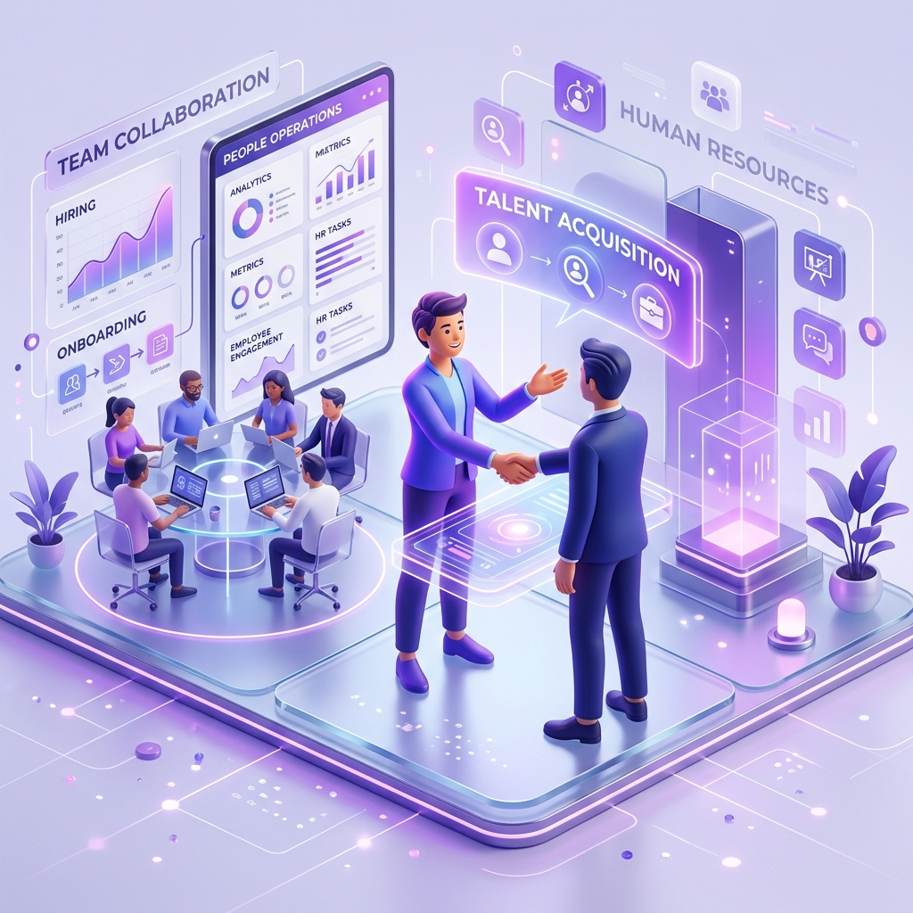
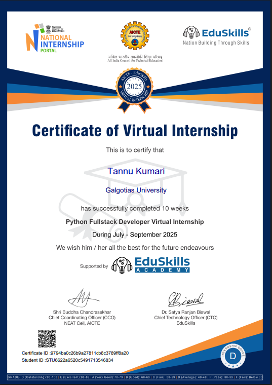
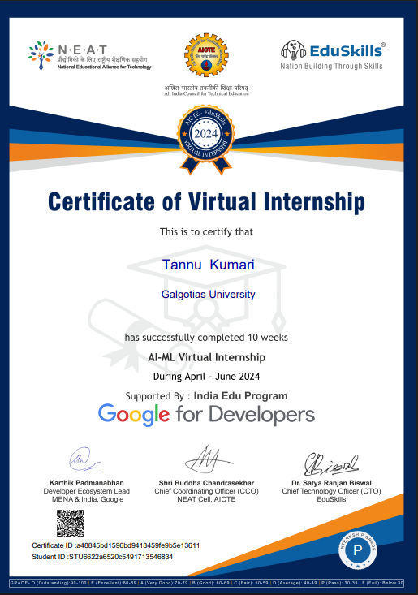
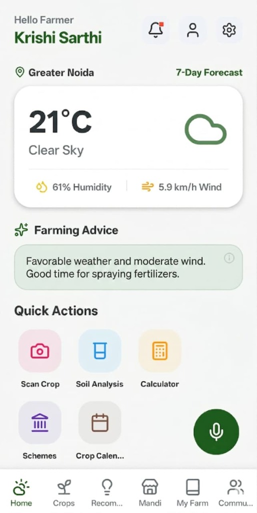
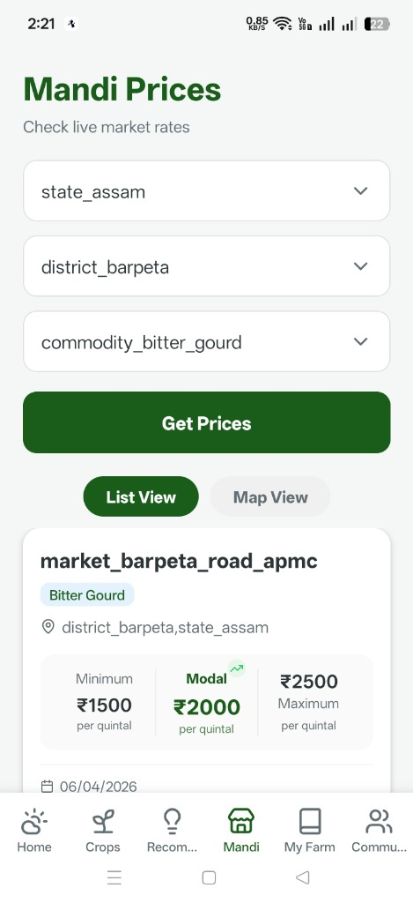
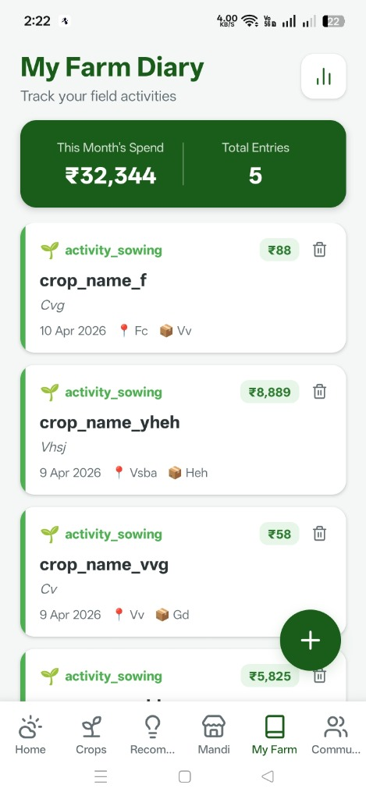
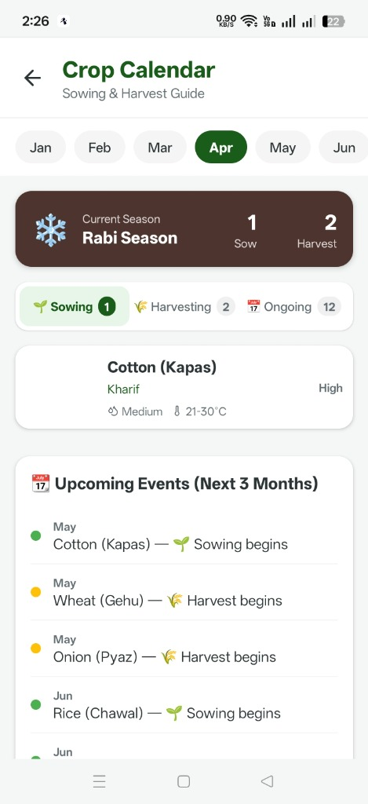
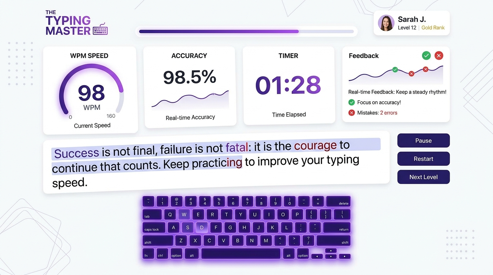
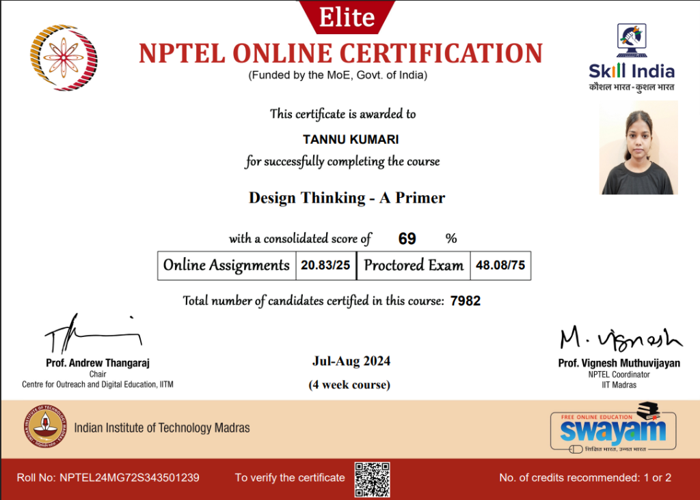

Hi, I'm Tannu Kumari Singh. I am a Computer Science undergraduate (AI Specialization) with strong communication, problem-solving, and coordination skills, building a career in Human Resources. I leverage my technical background to bridge the gap between engineering teams and recruitment activities.

I am a Computer Science undergraduate driven by empathy, organizational clarity, and a passion for helping people and teams succeed.
While developing software applications, I discovered that my greatest strengths lie in team coordination, clear communication, aligning priorities, and handling tasks meticulously. This realization shaped my career goal to enter Human Resources, with a dedicated interest in talent acquisition coordination, candidate communication, interview scheduling, and onboarding support.
Rather than treating recruitment as a purely administrative task, I view it as an opportunity to build trust, represent an organization's values, and identify the right human potential to power innovation.
Managing interview pipelines, candidate communication, and seamless coordination.
Assisting new joiners, creating structured workflows, and ensuring smooth transitions.
Understanding developer tech stacks and IT job requirements without communication barriers.
Active listening, clear stakeholder correspondence, and fostering supportive team cultures.
A balanced blend of people skills, recruitment coordination, organization, and technical literacy.
Core operational capabilities focused on driving candidate pipelines, communication clarity, and seamless interview execution.
Interpersonal and team-building capabilities honed through hackathon leadership, academic collaboration, and team presentations.
Comprehensive computer science foundation providing deep understanding when sourcing and screening engineering candidates.
Systematic documentation, information structuring, data tracking, and modern productivity tooling.
Real-world industry exposure demonstrating teamwork, agile workflows, and operational discipline.
Experiencing firsthand how technical teams operate provides an authentic perspective on team dynamics, sprint deadlines, developer morale, and the qualities required for engineering success.


Demonstrating human-centered empathy, accessibility, and interactive assessment design.
Helped build a mobile application with a multilingual interface and reusable components designed specifically for rural farmers who face digital literacy barriers and complex navigation hurdles.
Focused on simplifying user flows, organizing critical agricultural data (weather, mandi market prices, crop calendars), and creating an inclusive experience that requires minimal cognitive load.
Designing for non-technical users sharpened my empathy for diverse backgrounds—a critical skill for designing intuitive employee onboarding journeys, accessible HR documentation, and user-friendly internal systems.




Developed an interactive web application that provides real-time speed (WPM) and accuracy diagnostics, responsive user interface states, and clear visual performance summaries.
Emphasized immediate, constructive feedback mechanisms that guide users to identify error patterns without discouragement—fostering deliberate practice and continuous improvement.
Reflects the fundamental principles of candidate skills assessment, objective benchmarking scorecards, and constructive feedback loops essential in performance management and talent evaluations.

Demonstrated abilities in guiding teams, coordinating deliverables, and pitching to evaluators.
Served as the designated Team Leader for a cross-functional engineering project. Coordinated team efforts under strict deadlines, mediated design choices, aligned individual responsibilities, and presented the project to faculty evaluators during the internal evaluation round—successfully qualifying the team for selection.
Engaged in an intensive, project-oriented event centered on user experience and creative problem-solving. Collaborated actively with peers in an agile, dynamic event environment to prototype engaging visual solutions.
Consistent academic record combining technical computer science with analytical excellence.
Pursuing an engineering degree with a dedicated focus on Artificial Intelligence, problem-solving, structured algorithms, and software development methodologies. Combines strong technical coursework with leadership initiatives and people coordination.
Validated credentials showcasing analytical discipline and user-centered thinking.
Demonstrated sustained persistence, analytical thinking, and consistent daily practice by solving over 350 algorithmic problems. This rigorous problem-solving foundation ensures a sharp eye for detail and the mental stamina required for managing demanding recruitment funnels and organizational tasks.
Earned the prestigious Elite credential in Design Thinking, cultivating structured approaches to empathy mapping, stakeholder need identification, iterative solution design, and human-first workplace innovation.

I am actively seeking opportunities in Human Resources, Technical Recruitment Coordination, and People Operations. I would be thrilled to connect and discuss how my blend of communication, coordination, and technical literacy can add value to your team.